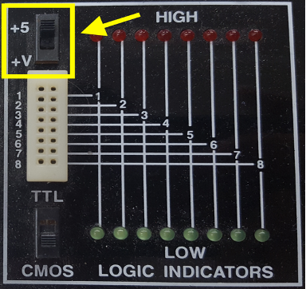
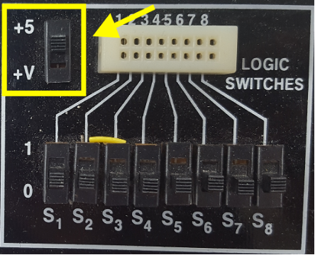

Lab 1: Electrical Characteristics of Logic Gates
1 Objective
The purpose of this lab is to become comfortable with logic gates as physical objects, interpret datasheets, and use test-and-measurement equipment to characterize their physical properties including voltage transfer characteristics, power consumption, and propagation delay. Specifically, you will use a breadboard, multimeter, oscilloscope, triple-output power supply, and signal generator. You will connect gate inputs to switches and outputs to LEDs to visualize the behavior. You will explore the voltage transfer characteristics, delay, and power consumption of a 74HC04 inverter, a transistor-level inverter, and a ring oscillator. You will then design, build, and test a full adder with logic gates.
2 Tutorial: Test and Measurement Equipment
This tutorial covers the breadboard, multimeter, oscilloscope, and function generator. There are also videos on the class web page showing how to use the breadboard, multimeter, oscilloscope, and signal generator, and how to wire up simple circuits. If you haven’t done these things before, the videos will save you some time.
2.1 Breadboard
You may use two different styles of breadboards in the lab. The Global Specialties protoboards, shown in Figure 1, have a convenient built-in power supply and LEDs, switches, and a basic function generator. They must stay at the lab stations in the Digital Lab. The other style is the small breadboard of Figure 2 like the ones you may have used in other classes. It lacks the supporting features, but you can check one out from the stock room and work from any convenient place.
Familiarize yourself with the breadboard you’re going to use. Either is sufficient for the course. Use a multimeter and some bits of wire to check which rows in the breadboard are connected.
2.1.1 Global Specialties Breadboard
Use the ohmmeter mode of the multimeter to confirm that horizontal rows of five holes are connected. Vertical columns of five holes are connected and intended for power and ground, but note that the top and bottom half of each column is not connected on this breadboard, making it easy to accidentally not power your circuits. Refer to the video for a demonstration. You can apply inputs using the logic switches and check outputs using the logic indicators shown in Figure 3. Be sure to configure the switches and indicators for 5 volt CMOS levels by making sure the voltage switches are both in the +5 volt position (not variable voltage) and the logic family switch is in the CMOS position. Refer to the video for a demonstration.


2.1.2 Small breadboard
Horizontal rows of five holes are connected and each entire vertical column is connected. The vertical columns are connected and intended for power (red) and ground (blue or black). On this breadboard, you can apply inputs by running wires from the power or ground columns.
You can also use the Wavetek logic probe shown in Figure 3 to check voltage levels.
- To use a logic probe, connect the reference (black mini-alligator clip) to ground and the high supply (red mini-grabber) to Vcc, which is +5V in our case. The probe will indicate whether you touch a logic HI or a logic LO output on your board, assuming you are using the same +5V and ground to power your board as well as the logic probe.
- The TTL/CMOS switch should be in the CMOS position if using CMOS parts.
- Leave the MEM/PULSE switch in the PULSE position.
When you are done building circuits, return the components to the supply drawers. Use the IC extractor from Figure 5 to carefully rock chips out without bending the pins. If you have reason to suspect a chip was damaged, throw it in the trash rather than making your classmates unhappy. 1
Taking the time to neatly wire will usually save you time in the long run because your circuit will be easier to debug. Never run a wire directly over a chip because you may find you need to remove and replace the chip.
If you are concerned that a piece of equipment in the lab is not working correctly, please put a sheet of paper on it with the symptoms and notify the instructor immediately. Your classmates will be grateful. Even if you are uncertain about whether the equipment is working, it is better to report it than ignore it.
2.2 Multimeter
A multimeter is used to measure steady voltages, currents, and resistances. In this class, you will mostly be interested in the DC voltage, DC current, and resistance modes, although multimeters can also measure steady AC voltages and currents.
It is remarkably easy to measure something other than what you think you are measuring. It is prudent to test your measurement equipment on a known value before attempting to measure an unknown. It’s also wise to predict the value of any measurement before you make it, and to investigate more closely if your prediction and measurement disagree.
Connect two vertical columns of a breadboard to 5V and ground, respectively, using either a Global Specialties breadboard with the built-in power supply or a standalone power supply and appropriate cables.
Put the multimeter in DC voltage mode. Make sure the two probes are in the voltage positions. Turn on the power supply. Place some wires in the breadboard columns so they are easy to contact. Measure the voltage and confirm that it is approximately 5V.
Get two 10 K resistors from the supply cabinet. Learn to read the resistor color codes so you can check you have the proper resistors. For example, see:
https://www.arrow.com/en/research-and-events/articles/resistor-color-code
The gold band on the resistor indicates +/- 5% tolerance.
Put the multimeter in ohmmeter mode. Measure each resistor and confirm that it is within tolerance.
Wire the resistors in series between 5V and ground on your breadboard. Predict the voltage between the two resistors (hint: it should be 5 * 10k / (10k + 10k) = 2.5V using the voltage divider equation) and confirm this with a DC voltage reading.
Put the multimeter in DC current mode. Note that you have to move the probes to different positions on the multimeter to read current. Predict the current following through the resistors (hint: it should be 5 / (10k + 10k) = 0.25 mA according to Ohm’s Law). Measure the current. Remember that current measurement is done in series rather than in parallel, so you will have to lift at least one resistor terminal out of the breadboard to make this measurement. Put the multimeter probes back in the voltage position when you are done so you don’t confuse the next user.
Put the resistors back in the supply cabinet when you are done.
2.3 Oscilloscope
An oscilloscope can be used to measure repetitive (periodic) signals or one-time events. Unlike a multimeter, it plots voltage vs. time, which is essential for debugging transient problems. Figure 6 shows the Agilent 54622D oscilloscopes in the lab. Auto mode is easy for periodic signals, but for one-time events you’ll need Single mode. Many interesting digital events thus require Single mode. Refer to the video to see how to use the oscilloscope and signal generator.
To measure a one-time event such as a button press, press the Mode/Coupling button to get to the mode menu. Choose Single (on some scopes, Normal as seen in Figure 7) by pressing the soft button under the mode menu of the screen. To measure a repetitive event such as a square wave, choose Auto. Next, click on the Edge button. Select the channel of interest (e.g. channel 1) and whether to trigger on the rising or falling edge. Adjust the Trigger Level knob to the midpoint of your expected event (e.g. 2.5 V).
You will usually have to adjust the time and voltage knobs to set the appropriate horizontal and vertical scales for the oscilloscope. That means you have to have a good idea of what you expect to see so that you can set the right scale to see it.
It is easy to misconfigure an oscilloscope and thus miss your signal. Always test your scope on a known signal before attempting to measure an unknown signal.
Use the oscilloscope in Auto mode to measure a 5V signal. Learn to use the cursors or measurement buttons to check the voltage. Then use the oscilloscope in Normal mode to measure a button being pressed. Adjust the scope so you can see the signal rise from 0 to 5V.
Sometimes students leave the oscilloscope in a weird configuration. If you are feeling bamboozled, hit the Setup button and choose Default Setup to get to a known reasonable state.
2.4 Function Generator
A function generator produces periodic or arbitrary time varying voltages. In this class, you will mostly be interested in generating square waves that alternate between 0 and 5 V at a specific frequency.
The Global Specialties have a basic on-board function generator shown in Figure 8. Set the button at the bottom to square (not sine or triangle). Use the top buttons and sliders to change the frequency.
The HP 33120A function generators in the lab (Figure 9) can produce more precise waveforms at higher frequencies. Press the square wave button to generate the signal alternating between low and high. Press the Freq button and adjust the frequency with the knob. Use the Ampl and Offset buttons to set the low and high levels. For example, to oscillate between 0 and 5 volts, set Ampl to 5 and Offset to 2.5 (the average level of the output). You will need a cable with a BNC connector on one end and two alligator clips on the other to connect the function generator output to your breadboard.
Set up a function generator to produce a 1.0 KHz square wave oscillating from 0 to 5 V. Configure the oscilloscope in Auto mode and observe the square wave. This is a simple repetitive signal so you can use the AutoScale button to set up the time and voltage scales (but beware that autoscale can get you in trouble when you aren’t measuring repetitive signals). Use the Quick Measurement buttons (see Figure 10) to measure the frequency and amplitude. Also learn to use the cursors (Figure 11) to make these measurements manually.
3 Gates, Switches, and LEDs
The circuit shown below has a pushbutton switch, two light-emitting diodes (LEDs), and two inverters (74HC04 datasheet) 2
- Select appropriate resistor values for R1-R3 by considering current flow in the circuit. Use the datasheet to find the inverter input current. Most LEDs can pass 20mA of current continuously without damage, but about 10mA of LED current is sufficient to light up the LEDs used in this class.
- Build the circuit on a breadboard..
- Use switches and stand-alone LEDs from the supply cabinet rather than the ones built into the large board, so you become comfortable with wiring them up. Remember that an LED has polarity; the shorter leg is the cathode and goes to the lower voltage.
- Refer to the videos for a demo on wiring a button and to see it in action on an oscilloscope, as well as how to wire an inverter.
- Predict what the LEDs should do as you press and release the switch, then test your circuit and resolve any discrepancies.
If your measurements reveal suspicious behavior, make sure that power and ground are attached to the chip. It is possible to damage chips, especially by shorting an output to power, ground, or another output.
Please put your components back in the supply cabinet if you are certain they work. If you had anomalous behavior, please throw the parts away rather than risk putting a bad component in the box to plague the next student in the lab.
4 CMOS Inverter Electrical Characteristics
- Sketch a schematic of a CMOS inverter built from TN2106 and TP2104 nMOS and pMOS transistors.
- Build your circuit on a breadboard.
- Set VDD = 5 V. Connect one input to an adjustable voltage.
- Measure the input and output voltages with a multimeter or oscilloscope.
- Beware: discrete MOS transistors are static sensitive. Ground yourself by touching a large metal object before handling your transistors.
- The source of each transistor is connected to its body within the package. Therefore, be sure to connect the source of the nMOS to ground and the source of the pMOS to VDD so you don’t turn on any internal diodes inadvertently.
- The circuit has a high gain in the forbidden zone and substantial capacitance between the output and input, so it is prone to oscillate, especially if you have long cables (with high inductance) to your power supply and input. If you have oscillation problems, you may be able to resolve them by placing a capacitor (e.g., 1 µF) between power and ground and/or between the input and ground on your breadboard near the circuit. This is called a bypass or decoupling capacitor and stabilizes the power supply and input to reduce the risk of oscillation.
- Adjust the input voltage and record the output. Enter your data into a spreadsheet or your favorite plotting program and generate a plot of the voltage transfer characteristic (VTC).
- Be sure to take a minimum of 7 data points, enough so that you can see the interesting parts of the curve to capture it faithfully (20 or more is not unreasonable), and show the actual data points in your graph.
- Determine \(V_\text{IH}\), \(V_\text{IL}\), \(V_\text{OH}\), and \(V_\text{OL}\).
- Calculate the high and low noise margins.
5 Ring Oscillator
With logic gates, we send an input in and get an output out. That output often seems to appear instantaneously. However, with this ring oscillator, you will experiment with factors that influence the response time and see that digital logic has a finite response time.
- Draw the schematic for a 5-stage ring oscillator as shown below. Label the pin numbers of each inverter input and output using a 74HC04 chip.
- Build your circuit on a breadboard. Ground any unused inputs.
- Think about the circuit and predict what it should do. Why must it have an odd number of stages?
- Capture the output on the oscilloscope and compare with your expectations.
- Measure the period and frequency of the output. From this measurement, calculate the average propagation delay of an individual inverter.
- Touch the wires and observe the frequency change. Why does the frequency change?
- Measure the current consumption of the circuit with an ammeter between 5V and the VCC pin of the chip 3
- Now build a new circuit with all of the inputs of the 74HC04 chip grounded. Do not leave the output of an individual inverter connected to the input of another.
- Measure the quiescent current consumption of the 74HC04 chip. Is it within the specification of the datasheet? Explain any discrepancies.
- Why is the power consumption of the ring oscillator higher than the quiescent current consumption of the grounded chip?
6 Full Adder
Design a full adder. The inputs are \(A\), $\(B\), and \(C_\text{in}\). The outputs are \(S\) and \(C_\text{out}\). The full adder computes \(\{C_\text{out}, S\} = A + B + C_\text{in}\). In other words, it sums the three inputs to produce a two-bit result, with \(S\) being the least significant bit and \(C_\text{out}\) being the most significant bit. \(C_\text{in}\) and \(C_\text{out}\) are called the carries. For example, if \(A = 1\), \(B = 0\), and \(C_\text{in} = 1\), the result is 1 + 0 + 1 = 210 = 102. Thus, the sum is 0 and the carry out is 1. Although the logic for a full adder is in the textbook and many other places, please work it out yourself from first principles.
- Write the truth table below for your full adder.
| Inputs | Outputs | |||
| Cin | B | A | Cout | S |
| 0 | 0 | 0 | ||
| 0 | 0 | 1 | ||
| 0 | 1 | 0 | ||
| 0 | 1 | 1 | ||
| 1 | 0 | 0 | ||
| 1 | 0 | 1 | ||
| 1 | 1 | 0 | ||
| 1 | 1 | 1 |
Table 5: Full Adder Truth Table
- Sketch a schematic using 74-series components. Label each gate with the part number (e.g. 04 for a 74HC04 inverter) and label each gate’s inputs and output with the pin number as described in Appendix A.7.
- Build your circuit on the breadboard. It will take careful wiring to avoid a rat’s nest and make it easy to debug. Connect the inputs to logic switches or DIP switches with pull-down resistors, and outputs to LEDs. Try all eight combinations for the inputs and check that the outputs match your truth table. Debug any discrepancies.
7 What to Turn In
- Please indicate how many hours you spent on this lab. This will be helpful for calibrating the workload for next time the course is taught. Include any suggestions you have for improving the lab. You will get one point for listing your time on each lab.
- Gates, Switches, and LEDs
- What resistor values did you choose? Why?
- Did your circuit function correctly?
- Transistor-level Inverter
- Plot of VTC
- Input and output logic levels
- High and low noise margins.
- Ring oscillator
- Photo of oscilloscope trace of switching output, annotated with the period and frequency.
- Compute the average delay of a single inverter from the ring
- Why does the frequency change when you touch the wires?
- Measured power consumption for both the ring oscillator and the powered quiescent chip
- Full adder
- Truth table
- Schematic
- Do your measured outputs match your truth table in all eight cases?
Please indicate any bugs you found in this lab manual, or any suggestions you would have to improve the lab.
Footnotes
If a chip has given you particular grief, you might want to take it home instead. Glue some googly eyes by pins 1 and 14, and a cute wire tail on the bottom, and start a farm of chip bugs.↩︎
You can find the pinouts of common 74-series logic gates in Appendix A.2.1 of the textbook (online and on the class web site) and the 74HC04 datasheet in Appendix A.5 or on the class website.↩︎
To measure supply current of a chip, you must remove the wire connecting the VCC pin to the 5V power supply and replace it with the ammeter. The ammeter must have the leads in the proper receptacles (different than for voltage measurement) and be on the DC current scale. If you place the ammeter in parallel with your chip (e.g. one lead to power supply and one to ground), you’ll create a short circuit between power and ground and probably blow out the fuse on your ammeter. Refer to the videos for a demonstration.↩︎